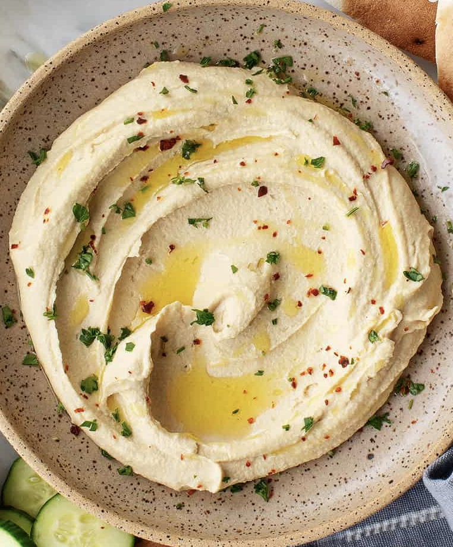

Hummus

Description
Using dry beans and fresh ingredients this recipe will take your hummus to a level smoothness and flavor you never knew existed.
Ingredients
- Dry garbanzo beans X 1lb
- Water
- Salt
- Extra virgin olive oil X 1/2 cup
- Lemon Juice X 1 lemon
- Garlic X 6 cloves
- Tahini X 1tsp